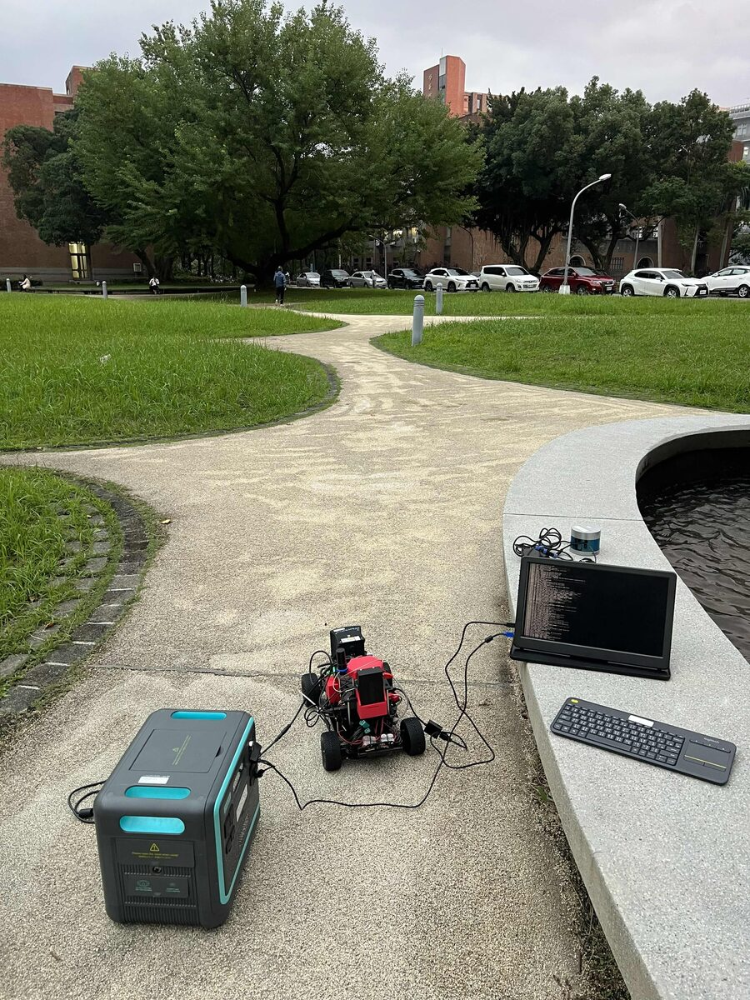
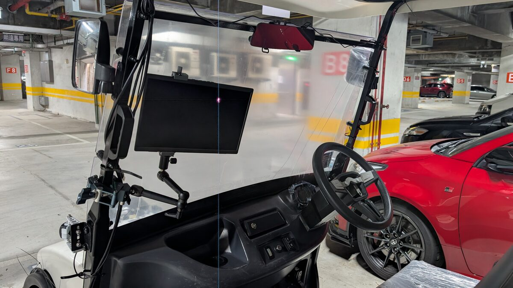
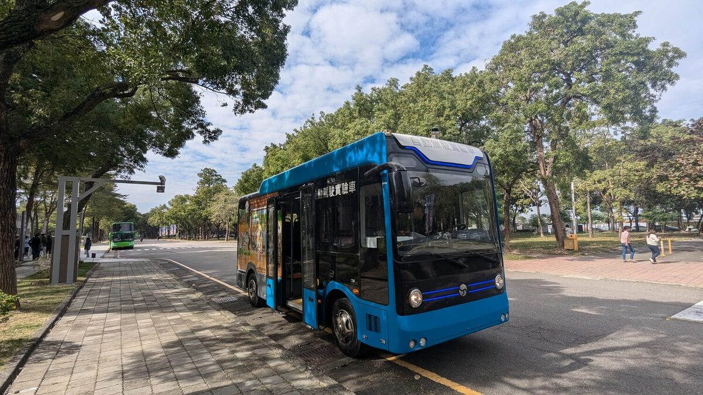

Software-defined autonomous vehicles built on Autoware — cross-compiled, deployed, and driven on real platforms from a research cart to a full-size bus.

Software-defined vehicle reference platform — our flagship Autoware testbed.

NTU × NTUST autonomous campus shuttle running the full Autoware stack.

Full-size bus — scaling the stack toward public-road class vehicles.
AutoSDV is our full Autoware-based autonomy stack, packaged so it actually runs on real hardware rather than only in simulation. We cross-compile and containerize the entire pipeline — from sensor drivers through localization, planning, and drive-by-wire — into a reproducible image that boots on an NVIDIA AGX-class compute unit. The accompanying book documents the architecture and walks through bring-up end to end.
nano-ros brings the ROS 2 programming model down onto microcontrollers and RTOS targets, letting the safety island speak the same language as the rest of the Autoware stack. This is the basis of our contribution to the Autoware Foundation reference-design working group, separating the high-compute autonomy domain from a certifiable real-time safety domain.
A full Autoware bring-up launches hundreds of nodes with tangled dependencies. play_launch orchestrates startup and exposes a resource timeline so you can see what runs when and what competes for CPU and GPU. Alongside it, colcon2deb and autoware-localrepo turn a colcon workspace into versioned Debian packages, so a field deployment is an apt install rather than a from-source rebuild.
Reliable perception starts with sensors that agree on where the world is. LCTK, our Lidar-Camera Toolkit, provides the calibration and fusion utilities to align lidar and camera frames and project detections between them. On top of single-vehicle sensing, we work on cooperative perception — sharing detections between vehicles and roadside units over V2X so each agent sees beyond its own line of sight.
Map-based localization is on the critical path of every drive, and NDT scan matching is expensive. Our CUDA NDT matcher moves that work onto the GPU, cutting per-scan latency enough to free CPU budget for the rest of the stack. We pair this with 5G-enabled deployment, offloading heavier compute off-vehicle over low-latency links.